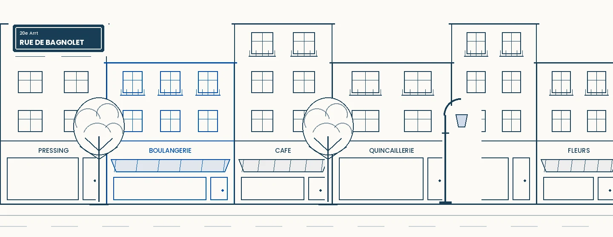
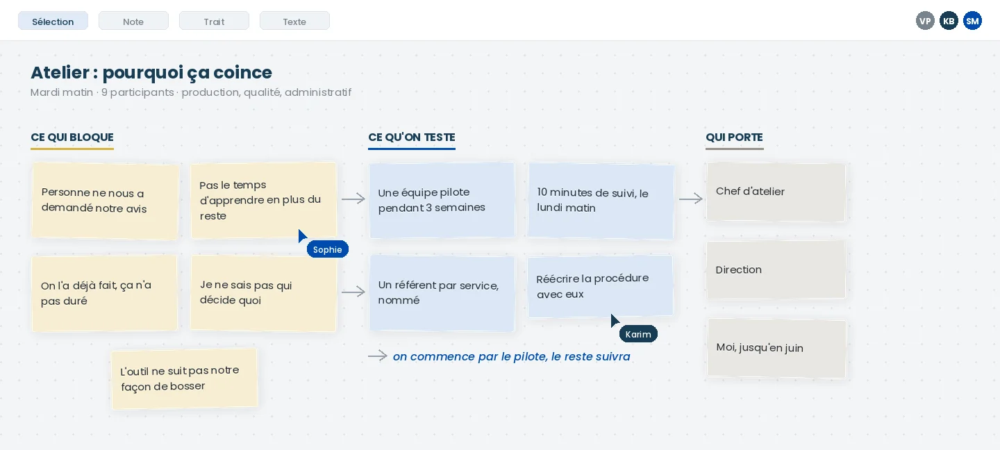

Accompagnement du changement pour les TPE et PME
Vous lancez une réorganisation, un nouveau logiciel ou une démarche RSE, et quelques mois plus tard chacun a repris ses anciennes habitudes. Je travaille avec les dirigeants et leurs équipes pour que ce qui est décidé tienne vraiment.

- 6 ansen conduite du changement
- 3 à 250salariés, TPE, PME et industrie
- Parisinterventions dans toute la France
- 30 minutespremier échange gratuit
Faire entrer une décision dans le travail réel
Une direction décide quelque chose. Pour que ça existe vraiment, il faut que des gens changent leur façon de travailler. C'est ce moment-là que j'accompagne, et c'est mon seul métier.
Ce qui déclenche l'appel change d'une entreprise à l'autre. Le travail à faire, lui, est toujours le même : comprendre ce qui bloque, décider avec ceux qui sont concernés, tester en petit, puis installer ce qui fait tenir.
Je me présente volontiers comme un consultant de quartier. On m'appelle comme on appelle un artisan qu'on connaît : sans passer par un standard, sans proposition commerciale de quarante pages, et avec quelqu'un qui vient voir sur place avant de dire quoi que ce soit.

-
Une réorganisation
Nouveaux rôles, nouveaux circuits de décision, équipes qui fusionnent, ou simplement un logiciel que plus personne n'ouvre. Sur le papier tout est clair, dans les faits chacun continue comme avant.
Comment j'interviens -
Une exigence RSE d'un client
Un donneur d'ordre réclame des engagements et des indicateurs. Il faut produire le document, mais surtout organiser la collecte pour l'année suivante.
Comment j'interviens
Ce que je rencontre le plus souvent
Si vous vous reconnaissez dans l'une de ces situations, elle se traite. Aucune n'est perdue d'avance.
-
Un outil a été acheté, et personne ne s'en sert
Le logiciel est payé, la formation a eu lieu, et six mois plus tard les équipes travaillent toujours sur leurs tableurs. La cause est rarement l'outil lui-même. Il a été choisi sans ceux qui devaient l'utiliser au quotidien.
-
La réorganisation est annoncée, rien ne bouge
Le nouvel organigramme est diffusé, les rôles ont changé sur le papier. Dans les faits, chacun continue de s'adresser aux mêmes personnes qu'avant, parce que personne n'a expliqué ce que le changement voulait dire pour son travail à lui.
-
Un donneur d'ordre réclame des engagements RSE
Un grand compte demande un reporting extra-financier pour continuer à travailler avec vous. Vous n'avez ni le temps ni les données pour y répondre, et la date approche.
-
Vous portez le projet tout seul
Vous êtes le seul à pousser, à relancer, à vérifier que ça avance. Dès que vous lâchez une semaine, ça retombe. C'est épuisant, et ça ne tiendra pas comme ça sur la durée.
-
Une tentative précédente a laissé des traces
Un projet a déjà été lancé en grande pompe puis abandonné. Vos équipes s'en souviennent très bien. Elles attendent de voir si celui-ci ira au bout avant d'y mettre de l'énergie.
Une boulangerie de quartier qui veut s'y mettre
À quoi ressemble concrètement une mission dans une très petite structure.
Le contexte. Une boulangerie de mon quartier, une poignée de salariés. Le dirigeant sentait qu'il avait des choses à faire du côté de l'énergie, des déchets et des invendus, sans savoir lesquelles comptaient vraiment ni ce que ça lui rapporterait.
Ce qui bloquait. Le sujet arrive presque toujours sous forme de liste d'obligations ou de bonnes intentions. Pour une entreprise de cette taille, c'est inexploitable : trop large, jamais chiffré, et personne pour porter les actions au quotidien.
Ce que j'ai fait. Des échanges avec le dirigeant, puis un audit sur place. J'en ai tiré une feuille de route d'une quinzaine d'actions, chacune avec un indicateur, un objectif daté et une estimation du gain attendu. Optimiser la planification des cuissons, passer l'éclairage en LED, valoriser les invendus avec une association, composter les déchets organiques, réduire les emballages plastiques.
Ce qui rend le document utilisable. Un tableau de bord où chaque action porte un nom, celui du dirigeant ou du chef boulanger, une échéance et un statut. L'idée est de le regarder dix minutes chaque semaine, pas d'en faire un rapport qu'on range.
Ce cas résume bien mon métier : pour une petite structure, la difficulté n'est pas de savoir quoi faire, c'est de désigner qui le fait et de tenir le suivi.
Où en est votre projet ?
Quatre questions, une lecture de votre situation et une idée de l'endroit par où commencer.
Quatre questions pour situer votre projet et voir par où il vaut mieux commencer. Rien n'est envoyé ni enregistré, la lecture s'affiche directement sur cette page.
Cette lecture reste indicative. Elle ne remplace pas un échange, mais elle donne un point de départ.
Quatre temps, et on avance
Rien de théorique. Chaque étape produit quelque chose que vos équipes voient, sinon elle ne sert à rien.

-
Temps 1
Écouter
Des entretiens courts avec les personnes qui font le travail tous les jours. Je remonte les vraies causes, pas celles qu'on suppose depuis le bureau.
-
Temps 2
Choisir avec eux
On sélectionne la méthode ou l'outil avec les personnes concernées. Ce qui a été choisi ensemble se défend tout seul.
-
Temps 3
Tester en petit
Un pilote sur une équipe et un cas réel. On mesure ce que ça change, on ajuste, et on obtient un résultat que les autres peuvent voir.
-
Temps 4
Rendre autonome
Formation, référent identifié en interne, points de suivi espacés. Je pars quand ça tourne sans moi, pas avant.
Victor Potier
J'ai passé six ans à accompagner des changements d'organisation. D'abord chez Orange Consulting, sur des projets où plusieurs centaines de personnes devaient modifier leur façon de travailler en même temps. Puis dans la start-up abCSR, comme Product Manager d'une plateforme de reporting RSE.
Aujourd'hui indépendant, je travaille avec des TPE et des entreprises de l'industrie, en direct et sans intermédiaire.
Ce que j'en ai retenu tient en une phrase : un projet échoue rarement pour des raisons techniques, il échoue parce que personne n'a pris le temps d'embarquer ceux qui allaient devoir faire autrement.
Ce qu'on me demande avant de commencer
Qu'est-ce que l'accompagnement du changement, concrètement ?
Mon équipe est réticente. Comment on démarre ?
Combien de temps avant de voir un résultat ?
Vous travaillez avec des entreprises de quelle taille ?
Quel est le tarif d'une première intervention ?
Et si je n'ai pas de budget ?
Parlons de votre situation
Trente minutes, gratuit et sans engagement. On regarde ce qui bloque et ce qui peut se débloquer rapidement.